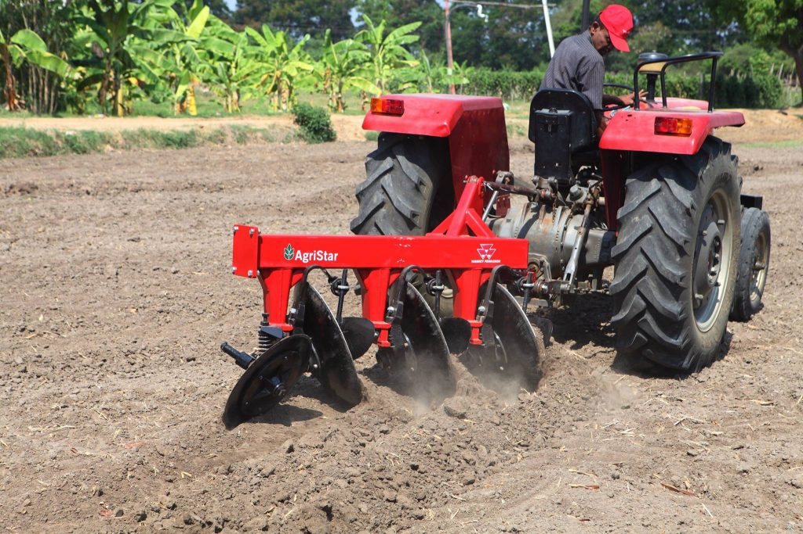
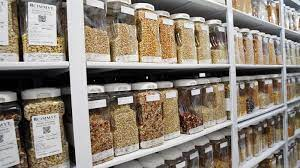

Introduction to Agricultural Implements
Agricultural implements are essential tools and machinery used in farming and agriculture to perform various tasks, such as soil preparation, planting, cultivation, and harvesting. These implements have revolutionized agriculture, making it more efficient and productive.
Nutrition-Rich Fertilizers and Manures
Nutrient-rich fertilizers and organic manures play a vital role in enhancing soil fertility and promoting healthy crop growth. Common fertilizers include nitrogen, phosphorus, and potassium-based products, while organic manures improve soil structure and microbial activity.

Seed Storage Facilities
Proper seed storage is crucial to maintain seed quality and viability. Seed storage facilities, including warehouses and seed banks, provide controlled conditions to preserve seeds, ensuring a consistent supply of high-quality seeds for planting.
Latest News in Agriculture
Stay updated with the latest trends and developments in agriculture. Discover innovative farming techniques, new crop varieties, and agricultural policies that impact the farming community. Knowledge is key to modern and sustainable agriculture.